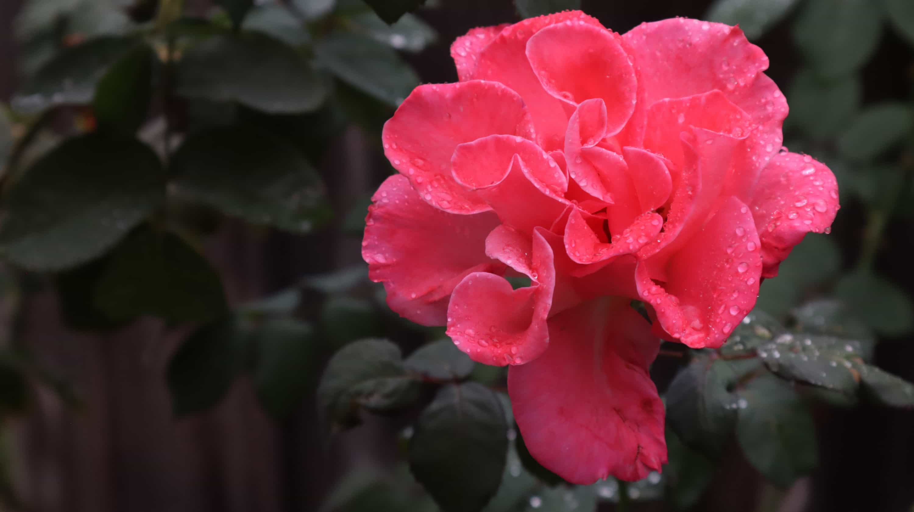
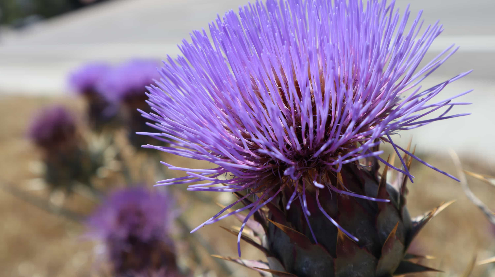
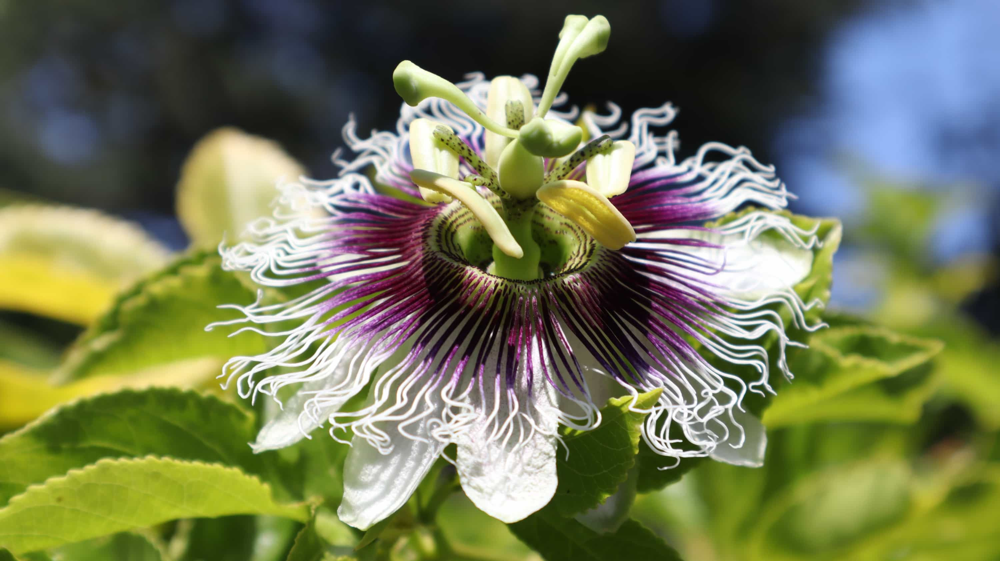
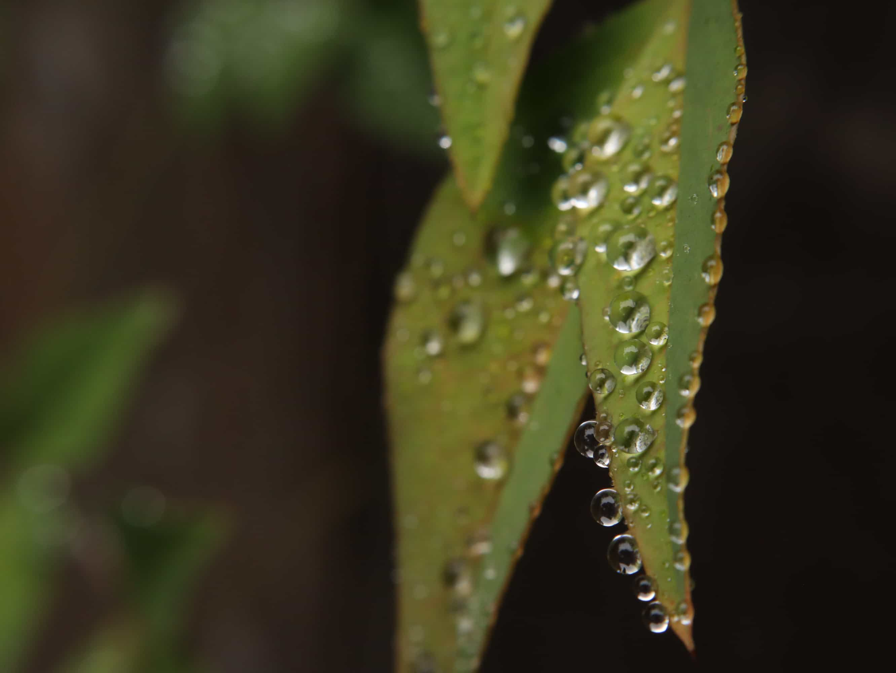
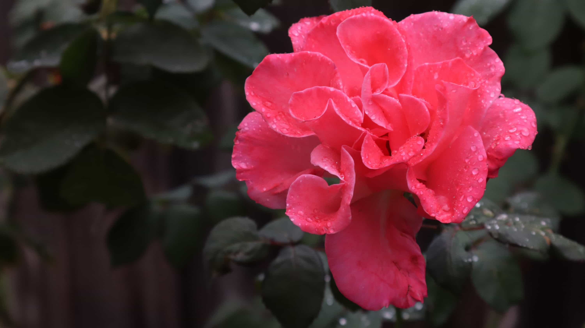
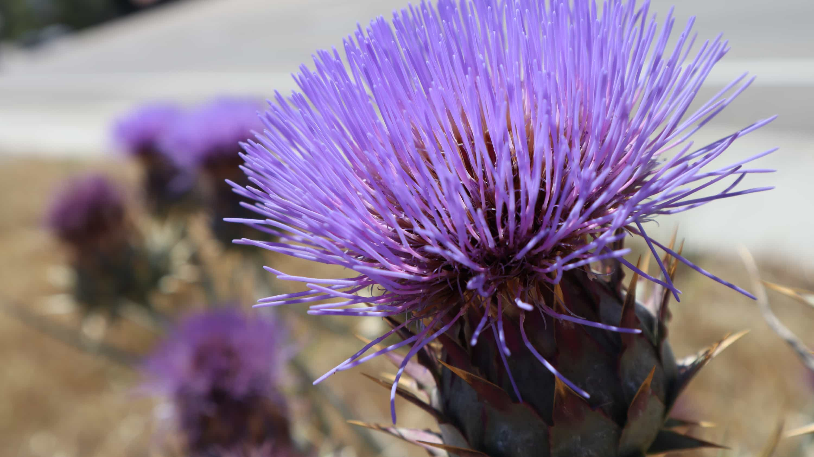
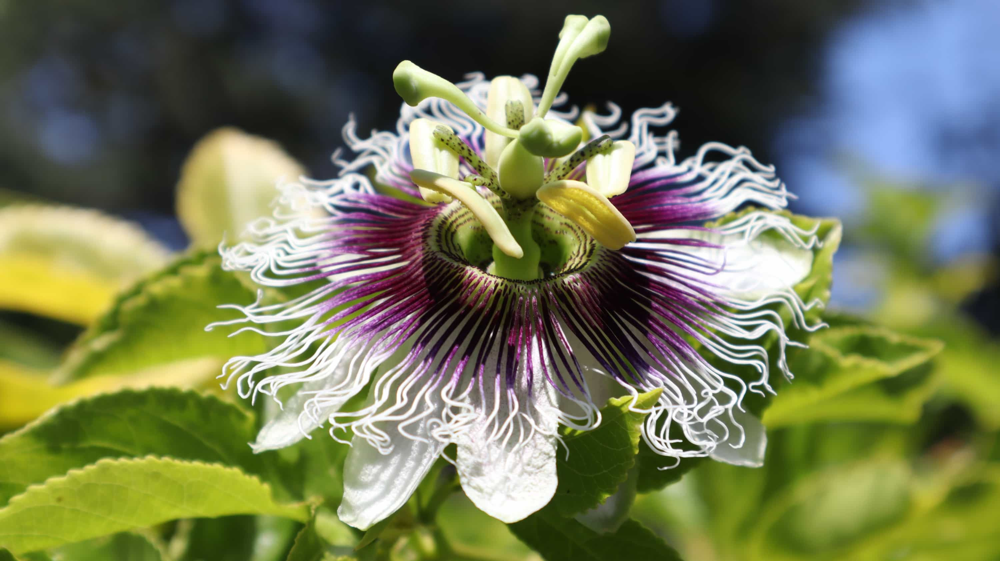
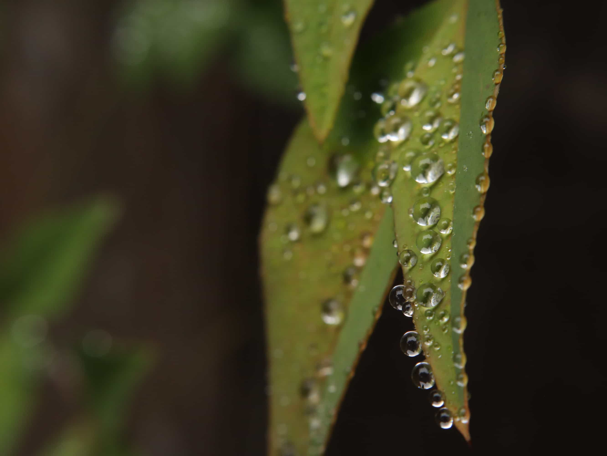

Nataniel Farzan

👋 Hi there! My name is Nataniel. Welcome to my website portfolio! I hope you enjoy!
About Me
I enjoy creating things. Some of my favorite hobbies are graphic design, video production, web design, and programming. Below is some of my most recent work.
Portfolio
Photography
Nature


 







Drone


Graphic Design
AP Computer Science Principles
Instagram Screen Diagram 1
This is the first part of a mockup series I created for the Instagram mobile app. This is a diagram of the home screen. This was also my first attempt at isometric design!
Instagram Screen Diagram 2
This is the second part of a mockup series I created for the Instagram mobile app. This is a diagram of the direct messages screen.
Instagram Screen Diagram 3
This is the third part of a mockup series I created for the Instagram mobile app. This is a diagram of the new post screen.
Graphic Design 1-2
NF Productions Logo
This is my typographic logo. A typographic logo is made up of only text. Mine combines my two favorite colors: red and black.
NF Logo Background
This is a background for my YouTube channel art. It is just repeating the NF logo over and over.
Graphic Logo
This graphic logo combines two graphic images: a compass and a wave. These graphics represent two things I love: traveling and going to the beach.
Self Portrait
The self portrait project was practice for the pen tool in Illustrator. The outline of the face and the shading was traced over a photo.